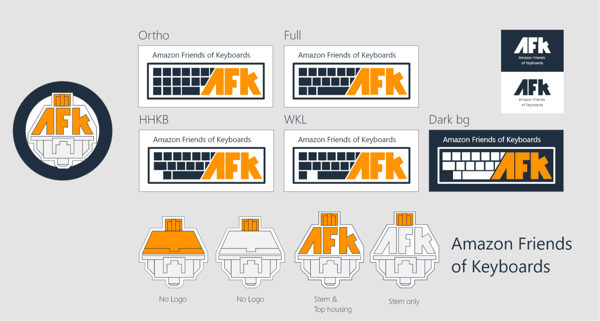
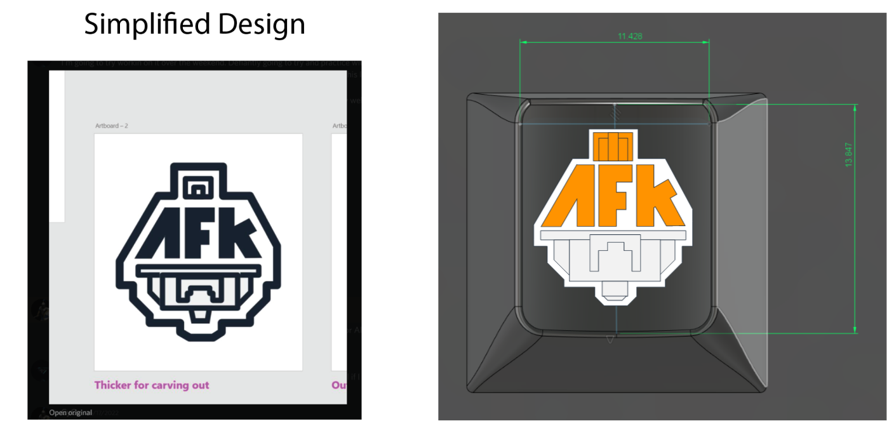
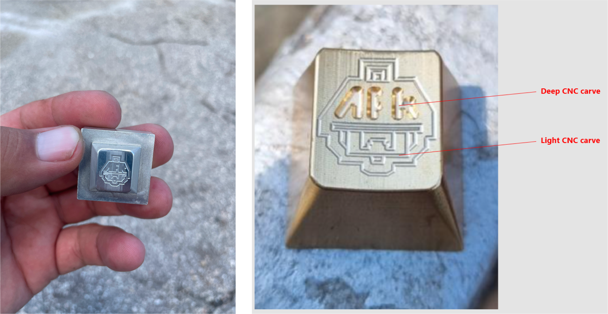
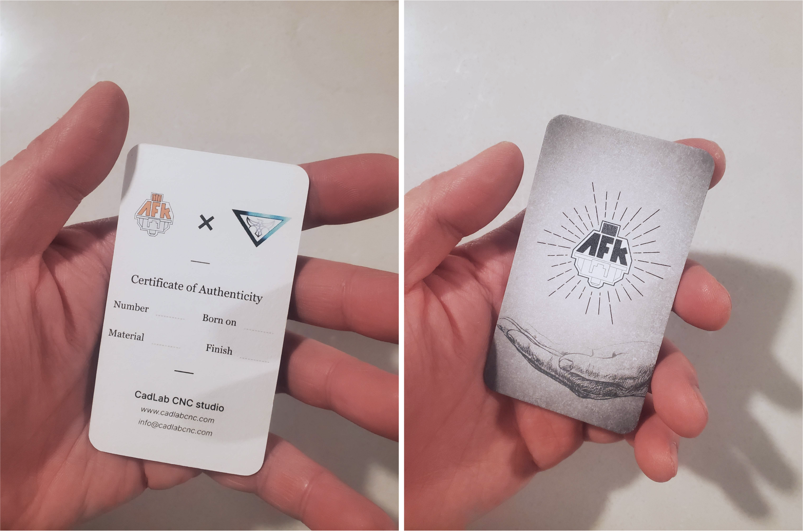
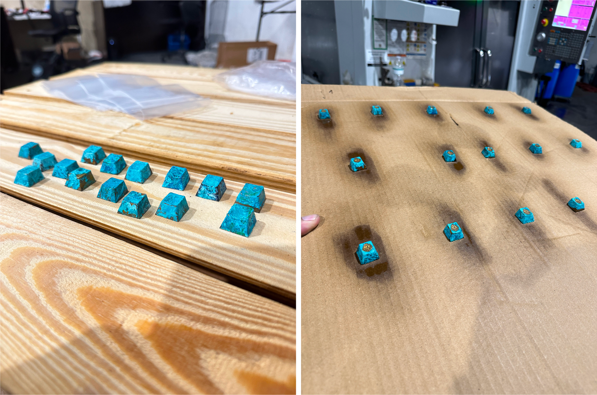
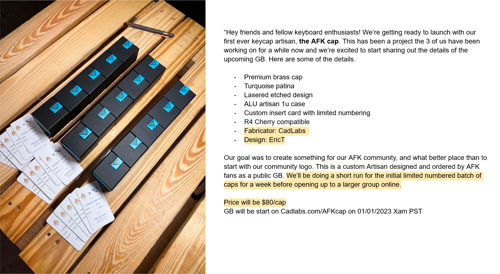
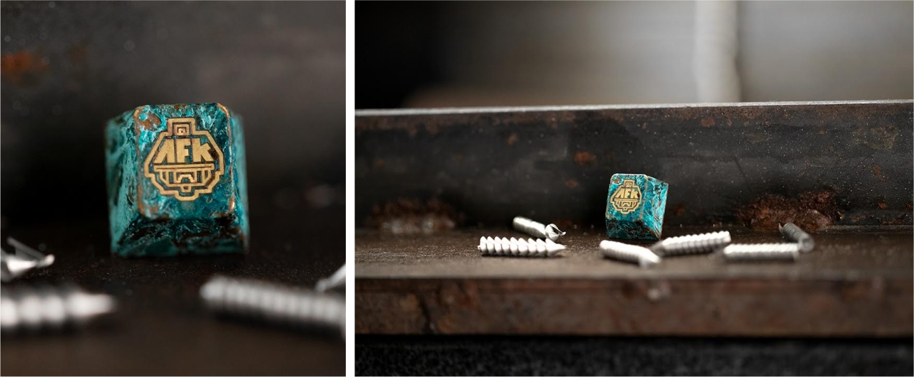
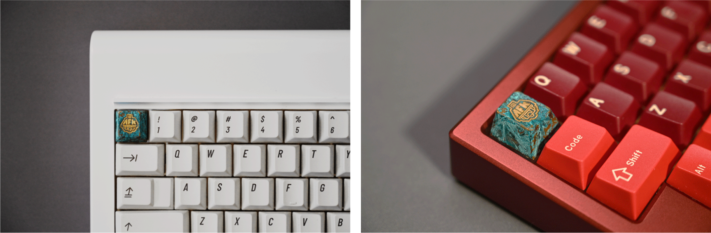
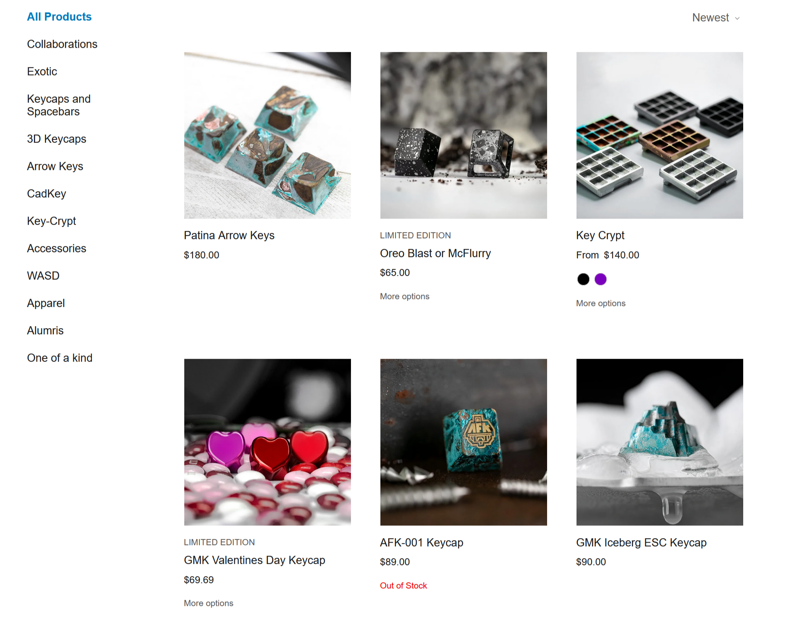
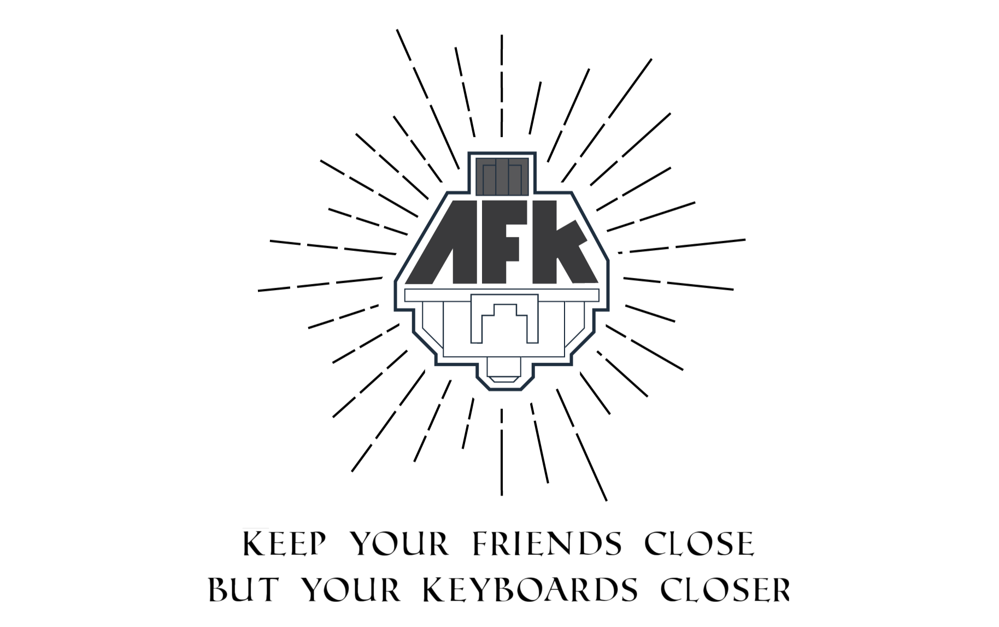

AFK artisan key cap
September 2023
This was a project that came out of a mechanical keyboard enthusiast group I was part of. I had initially played around with some ideas for some group logo and some visuals to accompany it. The group eventually adopted the name and logo. A few years later a old coleague that had worked together on the project asked me if we could make some custom artisan keycaps based on the design.
01. Origin
This began as a small side project to make some simple logo and design for our keyboard enthusiast chat group at work.
The design was based on a side profile image of a mechanical keyboard switch. The name AFK had double meaning for our group. It was both the name of our group and also internet slang for "Away from keyboard".
We took the original design and simplified it down to allow for detail work on the keycap. The number of lines and the thickness of lines were changed to allow for the machining on solid metal.
02. Prototype
We worked with an amazing CNC metalworks guy who ran CadLabs in Florida. He worked with us to get our designs to spec and did some simple prototypes in aluminim before working in brass.
After he was done a set of prototypes he would send it off to me and CyCo to review and inspect. We did a few rounds of prototyping to get the look and consistency we felt right.
03. Production
In the production phase, we got ready to share with the mechanical keyboard community our new artisan cap. CadLabs got started getting the pre-orders caps going. I made some new namecards with some additional design. CyCo worked on getting the product forms, descriptions, and community posts ready for launch day.
The new design for the namecards. Printed with delux Moo.com cardstock.
The first batch of production ready keycaps.
Cards, caps, and boxes ready to send out to customers.
04. Keycap
And here is the finished product. We had a run of about 20 caps sold overall and had the sales been a bit stronger we could have set up a round 2 with additional colors and materials. Big shoutout to Cyco and Cadlabs for being amazing partners in this project!
   